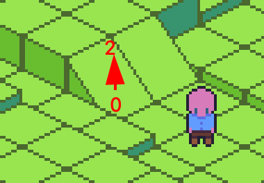
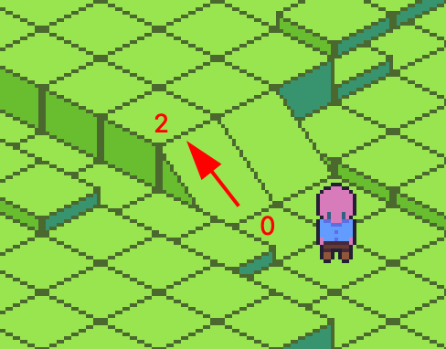
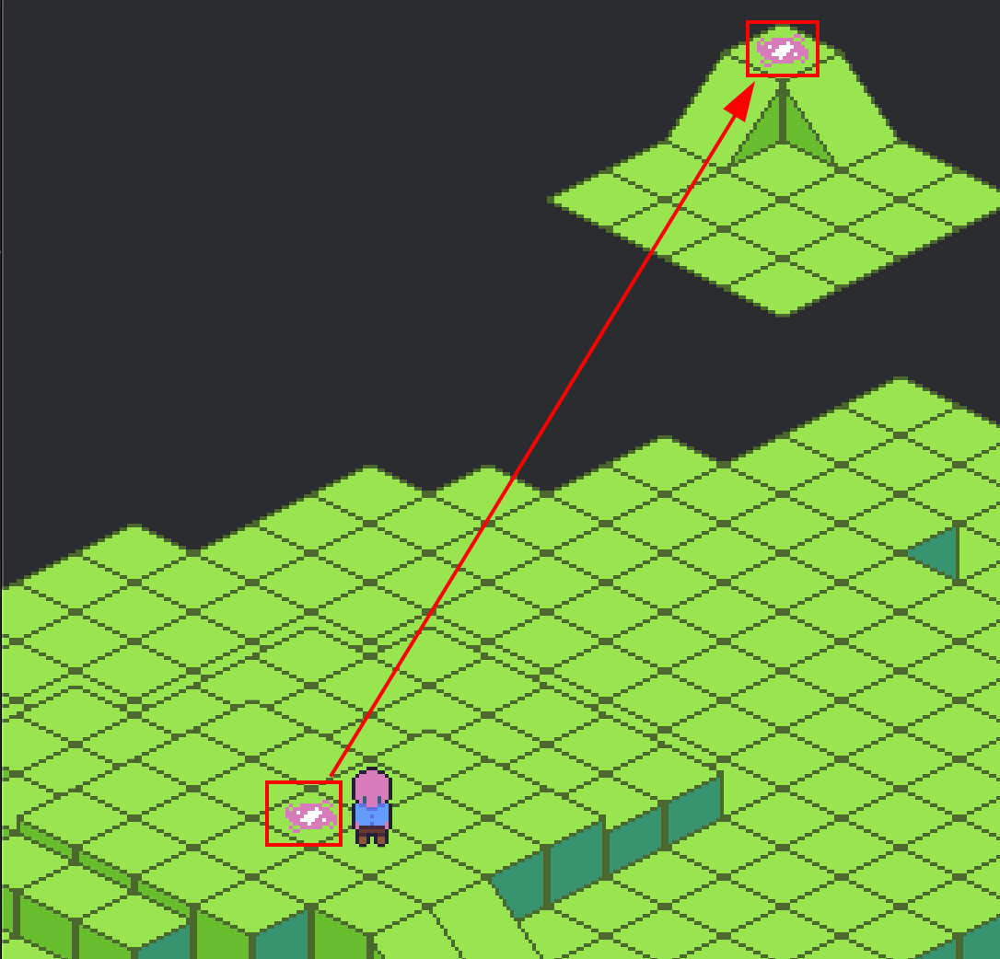
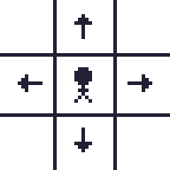
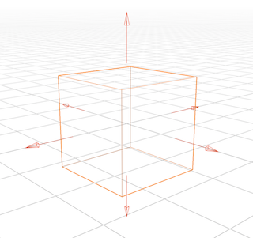
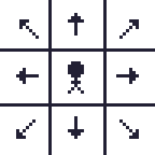
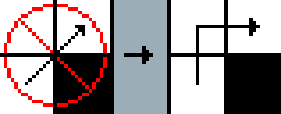
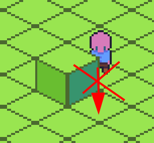
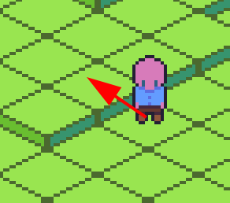

Introduction
bevy_northstar is a Hierarchical Pathfinding plugin for Bevy.
The crate provides:
-
Pathfinding Grids: A grid defines the navigable area and stores precalculated neighbors, chunks, entrances, and internal paths used for pathfinding.
-
Pathfinding Systems: Bevy systems to handle pathfinding and collision avoidance for you.
-
Pathfinding Algorithms: You can call the pathfinding functions directly if you desire to handle the pathfinding logic in your own systems or just want to do a one off call.
-
Debugging Tools: Easily visualize the grid and calculated paths to troubleshoot any tilemap and pathfinding issues.
The crate is currently designed for use with 2d and 3d grid based tilemaps. It is not dependent on any specific tilemap Bevy crate, though it's been designed for ease of use with bevy_ecs_tilemap and any related crates such as bevy_ecs_tiled and bevy_ecs_ldtk.
How It Works

Hierarchical pathfinding works by dividing the map into chunks and identifying viable connections between each chunk at their edges. This creates a network of high-level graph nodes across the map.
Instead of searching the entire map at once, pathfinding can use these high-level nodes to run a simplified A* search over a much smaller set of positions, which significantly speeds up the process.
Additionally, for each high-level node, paths through the local chunk to all other chunk nodes can be precomputed and stored. After the high-level search is complete, these precomputed paths are reused, so the algorithm doesn't need to search through every chunk individually.
Once the high-level path is found, it is refined using a line tracing algorithm to make the path more optimal.
In the picture above, the high-level path is shown in blue, and the red line shows the final refined path built from it.
Who This Crate Is For
The current target for this crate is for games with large tile based maps and designed to support large sim games like Dwarf Fortress or Rimworld, RPGs with grid like movement like Fallout 1/2, and Roguelikes.
It does not support Flowfield pathfinding which is better suited in RTS games where many agents are often pathfinding to the single goal. HPA* is better suited for many agents with their own unique goals.
Nav meshes are not supported yet but are planned; they’re better suited for games with freeform movement, think Zelda-style movement, rather than grid-constrained paths. You can certainly abstract the grid-based paths to freeform movement though.
Other crates that might fit those projects better:
Flowfield
NavMesh
DIY A*
- pathfinding: The general pathfinding crate is a good place to start if you just want to implement simple A*.
3D: Why and When
Even if your game is technically 2D, many 2D tilemap games feature 3D movement often referred to as 2.5D. Isometric games are a great example, but even top-down games like Zelda often include a concept of depth. There are also fully 3D games that use grid-based movement in three dimensions, such as X-COM.
If your 2D game allows regular movement between floors or terrain levels, you’ll likely want to use a 3D grid.
Quick Start
Cargo Setup
Add required dependencies to your Cargo.toml file:
[dependencies]
bevy = "0.16"
bevy_northstar = "0.3"
Features
Stats
Enable statistics reporting, includes pathfinding, collision avoidance, and grid build time stats. Useful for diagnosing frame spikes. See Debugging.
Parallel (Enabled by default)
Uses rayon to build the navigation grid in parallel. This greatly speeds up grid rebuilds, but may cause issues in WASM builds.
To disable parallelism (e.g. for WASM support), disable default features:
bevy_northstar = { version = "0.3", default-features = false }
⚠️ Warning
If you disableparallel, rebuilding the grid during gameplay (e.g. mining, explosions, etc.) can be quite expensive. You will want to confine your updates in a single frame to the least amount of affected chunks.
Debug Optimization
Pathfinding and grid algorithms involve a lot of branching, which can make debug builds significantly slower. You can set the optimization settings for this crate so you can still debug your game without the performance hit.
Follow Bevy Quickstart Cargo Workspaces to add opt-level = 3 to your Cargo.toml dependencies.
Or alternatively add the following to your Cargo.toml:
[profile.dev.package."bevy_northstar"]
opt-level = 3
Crate Usage
The basic requirements to use the crate are to spawn an entity with a Grid component, adjust the navigation data, and then call Grid::build() so the chunk entrances and internal paths can be calculated.
To use the built-in pathfinding systems for the crate, add the NorthstarPlugin specifying the Neighborhood to use.
CardinalNeighborhood (North, East, South, West) is a good neighborhood to start with. See Neighborhoods for the full list and details.
use bevy::prelude::*; use bevy_northstar::prelude::*; fn main() { App::new() .add_plugins(DefaultPlugins) // Add the Northstar Plugin with a selected neighborhood to use the built-in pathfinding systems .add_plugins(NorthstarPlugin::<CardinalNeighborhood>::default()) .add_systems(Startup, (startup, build_grid.after(startup))) .run(); } fn startup(mut commands: Commands) { // Configure the grid let grid_settings = GridSettingsBuilder::new_2d(64, 48).chunk_size(16).build(); // Spawn the grid used for pathfinding. commands.spawn(Grid::<CardinalNeighborhood>::new(&grid_settings)); } fn build_grid(grid: Single<&mut Grid<CardinalNeighborhood>>) { let mut grid = grid.into_inner(); // Let's set the position 8, 8 to a wall grid.set_nav(UVec3::new(8, 8, 0), Nav::Impassable); // The default settings set every position as passable but for demonstration let's set one // Nav::Passable takes a movement cost which determines how expensive it is to move to that position. grid.set_nav(UVec3::new(4, 4, 0), Nav::Passable(1)); info!("Building the grid..."); // The grid needs to be built after setting the points. // Building the grid will calculate the chunk entrances and cache internal paths. grid.build(); info!("Grid built successfully!"); }
Grid Generic Neighborhood Shorthand Types
The following shorthand types are also available for constructing and referencing a Grid::<N>.
- CardinalGrid
- CardinalGrid3d
- OrdinalGrid
- OrdinalGrid3d
Rather than Grid<CardinalNeighborhood>::new you can use CardinalGrid::new.
Rather than querying Single<&mut Grid<CardinalNeighborhood>> you can query Single<&mut CardinalGrid>
Quick NorthstarPlugin Pathfinding System Usage
Using the example above we can create a system to look for entities without a path and give them a goal.
If you're not interested in using the built-in systems, see Pathfinding for examples.
#![allow(unused)] fn main() { use bevy::prelude::*; use bevy_northstar::prelude::*; fn spawn(mut commands: Commands) { let grid_settings = GridSettingsBuilder::new_2d(64, 48).chunk_size(16).build(); // Store the spawned entity to relate entities to this grid. let grid_entity = commands.spawn(CardinalGrid::new(&grid_settings)); // Let's spawn a pathfinding Player agent commands.spawn(( Name::new("Player"), // AgentPos is required to position your entity in the grid. AgentPos(UVec3::new(4, 4, 0)), // Here we relate this agent to the grid we created. AgentOfGrid(grid_entity), )); } fn pathfind_agents( // The Pathfind component acts as a request to pathfind to a goal. query: Query<Entity, Without<Pathfind>>, mut commands: Commands, ) { for entity in &query { // Let's request to pathfind to 7,7. commands.entity(entity).insert(Pathfind::new(UVec3::new(7, 7, 0))); } } fn move_player( mut query: Query<(Entity, &mut AgentPos, &NextPos)> mut commands: Commands, ) { for (entity, mut agent_pos, next_pos) in &mut query { // NextPos contains the next valid position in the path. // Here we update just the AgentPos to keep it aligned with the grid, // but for real usage you would also likely update the transform for world positioning. agent_pos.0 = next_pos.0; // Remove the NextPos component and the pathfinding system will insert a new NextPos with the next position in the path. commands.entity(entity).remove::<NextPos>(); // Once the agent reaches its goal, Pathfind will be removed. } } }
Grid as a Component
Currently the plugin Pathfinding and Debug systems expect there to be only a single copy of the Grid component which means you can't currently use them if you want to support multiple grids in your project.
Normally it would make sense for this to be Bevy Resource but this decision was made so the plugin can update to support multiple grids in the future without making breaking API changes. If your project needs to support multiple pathfinding grids you can avoid using the NorthstarPlugin and NorthstarDebugPlugin and call the pathfinding functions directly on the Grid components for the time being.
Configuring the Grid with GridSettingsBuilder
Use GridSettingsBuilder to generate GridSettings to pass to the Grid constructor.
You will need to call build() to get the returned settings to pass to Grid.
#![allow(unused)] fn main() { use bevy_northstar::prelude::*; let grid_settings = GridSettingsBuilder::new_2d(128, 128) .chunk_size(16) .default_impassable() .add_neighbor_filter(filter::NoCornerClipping) .enable_collision() .avoidance_distance(5) .build(); let grid: Grid<OrdinalNeighborhood> = Grid::new(&grid_settings); }
GridSettingsBuilder Configuration Breakdown
Constructors
new_2d(width, height)
Request a 2d grid. The grid always uses UVec3 in the background so this is just a helper constructor to ignore Z.
width and height are the dimensions of the grid, not pixel size.
new_3d(width, height, depth)
Request a 3d grid. depth being the z dimension.
Chunk Settings
chunk_size(size)
Default: 16
The grid is divided down into regions called chunks. You can configure the size of these regions with chunk_size(size). Larger chunks will reduce build time and pathfinding time, while smaller chunks will create more optimal paths.
chunk_depth(size)
Default: 1
Ignore if your game is fully 2d. The chunk regions depth is determined separately. 1 is fine for fake 3d maps like isometric maps with a few height layers.
enable_diagonal_connections()
By default the entrances to chunks only look for other chunks that are cardinally adjacent. Enabling diagonal connections will create entrances in corners where diagonally adjacent chunks are accessible.
Enabling this will increase build and pathfinding time but can result in better paths if you have a noisy map.
Default Navigation Settings
default_movement_cost(cost)
Default: 1
Initializes each grid cell with the set cost.
default_impassable()
Default: Passable
Initializes each grid cell as Nav::Impassable. Useful if you're procedurally generating your map and can speed up setting cells by only digging out what's needed.
Collision Settings
enable_collision()
Default: Collision disabled
Enables the built-in pathfinding systems to use collision avoidance so entities with the Blocking component will never occupy the same position.
avoidance_distance(distance)
Default: 4
The collision avoidance system will look ahead in the path to see if any upcoming path positions might be blocked and will re-route to avoid the collision. This will set how far the system looks ahead. Longer distances will affect CPU performance.
Neighbor Settings
add_neighbor_filter(filter)
Pass a NeighborFilter that will be applied to viable neighbors when they are precalculated. See Filters.
Cell Navigation Data
Each cell in the Grid contains navigation data that is used for pathfinding.
The primary way for setting the nav data is using Grid::set_nav(), which takes a Nav enum.
Cost
"Cost" is a common concept in pathfinding and is used throughout the crate. It represents how difficult it is for an agent to move through a given cell. All internal pathfinding systems use cost to find the lowest-cost path to a goal, rather than the absolute shortest one.
You can use cost to discourage agents from entering certain areas. For example, moving through water might be allowed but is assigned a higher cost so that agents avoid that route unless necessary. Another use case would be movement budgets like action points. Each tile could represent a certain number of action points a move costs.
Nav
Nav is the enum used to set cell navigation data. You can set it with Grid::set_nav(). For example:
#![allow(unused)] fn main() { // Set 1, 1, 1 to a wall grid.set_nav(UVec3::new(1, 1, 1), Nav::Impassable) // Set 2, 2, 2 as "walkable" with a cost of 4. grid.set_nav(UVec3::new(2, 2, 2), Nav::Passable(4)) // Set 3, 3, 3 as a portal that warps the agent to 7, 7, 7 with a cost of 1, // one_way is set to true which means a reverse portal at the target will not be created. grid.set_nav(UVec3::new(3, 3, 3), Nav::Portal(Portal::to(UVec3::new(7, 7, 7), 1, true))) }
Nav::Impassable
Marks the cell as impassable (e.g., a wall). Paths will never include this position.
You can default the entire grid to impassable using GridSettingsBuilder::default_impassable.
Nav::Passable(MovementCost)
Marks the cell as passable with a specified cost.
By default, GridSettingsBuilder sets all cells to passable with a cost of 1. You can override this with GridSettingsBuilder::default_cost(u32).
This is the main variant used for standard walkable terrain.
Nav::Portal(Portal)
Defines a "portal" that overrides normal neighborhood movement rules. See below for usage.
Portal: Ramps/Stairs, Elevators, Actual Portals
Portals allow movement between positions that wouldn't normally be adjacent under standard neighborhood rules. They're often used in 2.5D tilemaps to represent elevation changes (e.g., ramps or stairs), but they can also be used for actual teleporters.
Ramp/Stairs

In the image above, the ramp transitions the agent from Z = 0 to Z = 2, which isn’t normally allowed by OrdinalNeighborhood3d. You can create this behavior by setting a portal at the ramp tile:
#![allow(unused)] fn main() { // Target destination for this portal, which in our case is the current tile x, y + to a height of 2. let target_pos = UVec3::new(tile_pos.x, tile_pos.y, 2); // Create the portal for the ramp grid.set_nav( // The position of our ramp cell UVec3::new(tile_pos.x, tile_pos.y, 0), // You can set the destination to the same x,y position but change the z height // We'll set the cost to 2, this is arbitrary. Nav::Portal(Portal::to(target_pos, 2, false)), // As one_way is set to false, we don't need to worry about creating a reverse portal at the target // set_nav will handle that for you. ); }
Alternatively, place the portals on tiles adjacent to the ramp:

#![allow(unused)] fn main() { // Have the bottom adjacent cell to the ramp portal to the top adjacent cell to the ramp. grid.set_nav(UVec3::new(0, 0, 0), Nav::Portal(Portal::to(2, 0, 2), 1, false)) }
Teleporting
To create a teleporter, set the portal destination to any arbitrary map position. You can make it one-way by not adding a reverse portal:
#![allow(unused)] fn main() { /// Let's say the current_tile is at 5, 5, 4 let current_tile = UVec3::new(5, 5, 4); grid.set_nav( current_tile, /// This cell can be used as a warp to 45, 45, 0 at a cost of 1. Nav::Portal(Portal::to(UVec3::new(45, 45, 0), 1, true)) ) }
Animations For Portals
You'll likely want to animate transitions when agents use jumps, ramps, or portals.
The Path::next() method is useful for this. It returns the next position in the path, which you can compare to the agent's current tile position. This lets you determine what kind of tile the agent is moving into such as a portal, a ramp. Or just test if the Z depth changes and trigger a jump animation.
You can also get the agents current cell navigation data, for example, test if the agent is standing on a portal:
#![allow(unused)] fn main() { if let Some(Nav::Portal(portal)) = grid.nav(position.0) { // Trigger some warping particle fx. } }
Grid Updates
You can modify the navigation data of individual cells at runtime using Grid::set_nav().
After making changes, you must call Grid::build() to update the internal state.
When Grid::set_nav() is called, the affected chunk and its adjacent chunks are automatically marked as dirty. During the next Grid::build() call, only those dirty chunks are rebuilt. If the default parallel feature is enabled, chunk rebuilds are performed in parallel for better performance.
Calling any of the Grid pathfinding methods on a dirty grid will log an error and return None.
Example:
#![allow(unused)] fn main() { if input.just_pressed(MouseButton::Right) { if let Some(position) = clicked_tile { let mut grid = grid.into_inner(); if let Some(nav) = grid.nav(position) { if !matches!(nav, Nav::Impassable) { // If the cell is passable, we set it to impassable. grid.set_nav(position, Nav::Impassable); } else { // If the cell is impassable, we set it to passable with a cost of 1. grid.set_nav(position, Nav::Passable(1)); } } else { return; } // You must call `build` after modifying the grid to update the internal state. grid.build(); } } }
Performance Notes
Rebuilding a single chunk takes approximately 0.2ms on modern systems. Note that updating a cell in a single chunk may require updating neighboring chunks if it touches an edge. If you enable GridSettingsBuilder::diagonal_connections() or use an ordinal Neighborhood, the number of adjacent chunks needing rebuilds may increase.
-
With the default
parallelfeature enabled, multiple dirty chunks can often be rebuilt in the same frame with a ~35% speedup. -
If
parallelis disabled (e.g. for WASM), rebuilding a large number of chunks sequentially may exceed your frame budget. In that case, consider:-
Limiting updates to small, localized areas per frame.
-
Spreading updates across multiple frames.
-
Adjusting chunk size to find the best performance fo your use case.
-
Pathfinding With Built-In Systems
Pathfind and AgentPos Components
To use the NorthstarPlugin pathfinding systems, insert a Pathfind and AgentPos on the entity you want to pathfind.
You will need to maintain the grid position in AgentPos.
#![allow(unused)] fn main() { commands .spawn(( Name::new("Player"), // Request a path to 8,8 Pathfind::new(UVec3::new(8, 8, 0)), // The entities current position in the grid AgentPos(UVec3::new(4, 4, 0)) Blocking, // Insert the Blocking component if using collision and this entity should block others. )); }
There are also shorthand constructors for creating Pathfind.
#![allow(unused)] fn main() { // If you're on a 2d grid you can use `new_2d()` without having to create a new UVec3. Pathfind::new_2d(8, 8) // Same with 3d Pathfind::new_3d(8, 8, 4) }
Pathfind Configuration
Pathfind has configuration options you can set by chaining.
mode(mode)
Default: PathfindMode::Refined
Use this to set the desired algorithm to find the goal. Ex: Pathfind::new_2d(8, 8).mode(PathfindMode::AStar).
See below for a list of PathfindModes and their description.
partial()
Default: Not enabled
Apply .partial() to request an incomplete path if the goal is not reachable. Ex: Pathfind::new_2d(4, 4).mode(PathfindMode::Astar).partial().
Will only work with AStar and ThetaStar. Refined, Coarse, and Waypoints use HPA* which doesn't handle partial paths easily.
search_region(NavRegion)
Provide a NavRegion and it will limit the pathfinding search so that it will be constrained inside the region.
max_distance(u32)
Sets a maximum search distance from the start position.
Useful for AI when searching for nearby goals or objects to prevent excessive searching if the goal cannot be reached.
NextPos
The pathfind system detects entities with a changed Pathfind component. It then runs the pathfinding algorithm and, if a valid path is found, inserts the next step as a NextPos component.
You should consume the NextPos component by moving the entity accordingly and then removing the component afterward. In a subsequent frame, the next_position system will insert the next NextPos if the path is not yet complete.
If collision avoidance is enabled, the next_position system will also handle local avoidance. It may adjust the path if another entity is blocking the current path within the configured avoidance_distance (as set in GridSettingsBuilder).
See Grid Settings for more information on enabling and configuring collision.
Example movement system:
#![allow(unused)] fn main() { fn movement( mut commands: Commands, mut query: Query<(Entity, &mut AgentPos, &NextPos)>, ) { for (entity, mut agent_pos, next_pos) in &mut query { // Set the entities GridPos to the NextPos UVec3. agent_pos.0 = next_pos.0; // Update the entities translation let translation = Vec3::new( next.0.x as f32 * 32.0, // Assuming tiles are 32x32 next.0.y as f32 * 32.0, 0.0 ); commands.entity(entity) .insert(Transform::from_translation(translation)) .remove::<NextPos>(); } } }
Pathfinding/Collision Marker Components
PathfindingFailed
This component is inserted into an entity if a path to the desired goal cannot be found. You will want to create a system that determines how to handle the failure in a way unique to your game.
AvoidanceFailed
This component is inserted when collision avoidance is enabled and the entity cannot find a path around a local Blocking entity.
The reroute_path system will automatically attempt to compute a new full HPA* path to resolve the issue in the next frame. You may also choose to handle this yourself in a custom system.
RerouteFailed
This component is added when all attempts to resolve a collision-related pathing issue have failed, meaning no viable path to the goal exists at the moment or the entity is stuck.
You must handle this case in your own system — for example, by:
- Selecting a new goal
- Waiting and retrying after a delay
- Alerting the player/user
#![allow(unused)] fn main() { fn handle_pathfind_failed( mut commands: Commands, mut query: Query<(Entity, &Name, &Pathfind), With<PathfindingFailed>>, ) { for (entity, name, path) in &mut query { log::warn!("{} cannot find a route to {}!", name, path.goal); let new_goal = locate_new_cheese(); commands .entity(entity) .insert(Pathfind::new(new_goal)) .remove::<PathfindingFailed>(); } } fn handle_reroute_failed( mut commands: Commands, mut query: Query<Entity, With<RerouteFailed>>, ) { for entity in &mut query { let some_new_goal = UVec3::new(3, 30, 0); // Just some random new goal commands .entity(entity) .insert(Pathfind::new(some_new_goal)) .remove::<RerouteFailed>(); } } }
Default Algorithm
By default, the pathfinding plugin systems use Refined HPA*.
You can change this by setting a different default_mode in the plugin settings:
#![allow(unused)] fn main() { App::new() .insert_resource(NorthstarPluginSettings { pathfind_settings: PathfindSettings { default_mode: PathfindMode::AStar, }, ..Default::default(), }) }
PathingSet
The NorthstarPlugin pathfinding systems run in their own system set named PathingSet.
You can use the set to ensure that your systems dealing with pathfinding and entity movement happen before or after the pathing systems.
#![allow(unused)] fn main() { app.add_systems(Update, move_pathfinders.before(PathingSet)); }
Staggering Pathfinding in the NorthstarPlugin Systems
The systems provided by NorthstarPlugin are designed to stagger how many agents can process pathfinding and collision avoidance in a single frame.
By default, both limits are set to 128 agents per frame. This may be too high if you actually have that many active agents. On the other hand, setting it too low can cause noticeable delays, with agents appearing to sit idle. You’ll want to tune these values based on your game’s performance needs.
Currently the reroute_path system that attempts to reroute agents that have a failed path that local collision avoidance is unable to resolve can still cause stutter. In a future update it will be moved into any async call.
To override the default settings, insert the NorthstarPluginSettings resource into your app:
#![allow(unused)] fn main() { App::new() .insert_resource(NorthstarPluginSettings { max_pathfinding_agents_per_frame: 16, max_collision_avoidance_agents_per_frame: 16, }) }
Available Modes / Algorithms
PathfindMode
The pathfinding algorithm enum. Current options are:
Grid Movement Modes
These modes return paths that keep the agent’s movement constrained to the grid. Every position in the path is adjacent to the next.
PathfindMode::Refined
This is the default algorithm
Gets a high level path to the goal at the chunk level. If a path is found, the path is iterated over with a line of sight / tracing algorithm to attempt to create the shortest path to the goal. The refinement is more expensive than the HPA* algorithm but not nearly as expensive as using A*.
Manual call: Grid::pathfind().
PathfindMode::Coarse
Returns the unrefined HPA* path pulled from the cached entrance paths. This will not return the path with the least steps to the goal but is extremely fast to generate. It's great for natural paths NPCs might use to move around a building for example.
Manual call: Grid::pathfind_coarse().
PathfindMode::AStar
This is standard A* pathfinding. It's very expensive for long distance goals on large maps but is still useful for very short distances or when you're concerned with the absolute shortest path. A good use would be movement where action points are subtracted based on number of moves.
Manual call: Grid::pathfind_astar().
Any Angle Modes
Any-angle modes return the path as a series of waypoint segments. Each waypoint marks the start or end of a straight-line segment that can be traversed without intersecting any obstacles. This is intended for freeform movement where the agent is not constrained to follow the grid.
You will need to handle your own collision when using Any-Angle modes. The typical use case for any-angle would be to use a physics engine to handle collision and add create a local steering avoidance system to avoid other colliding agents and walls.
⚠️ Warning The cost of an any-angle path is a good estimate but does not account for the exact cost of every grid cell the agent may or may not pass through between waypoints.
PathfindMode::Waypoints
Very fast HPA* any-angle pathfinding that returns only the essential waypoints instead of the full step-by-step path. It uses the standard HPA* algorithm, but during the refinement stage it outputs only the waypoints rather than expanding every intermediate step.
Manual call: Grid::pathfind_waypoints().
PathfindMode::ThetaStar
An expensive but near-optimal any-angle algorithm. It produces paths similar to PathfindMode::Waypoints, but can sometimes yield slightly shorter results. This is a lazy Theta* implementation, which calculates line-of-sight for all neighbors during the search, making it significantly more costly to compute.
Manual call: Grid::pathfind_thetastar().
Limited Search
There is also an extra AStar algorthm that is currently only available by manually calling it on the grid Grid::pathfind_astar_radius(). This will run AStar pathfinding limited to a u32 radius around the starting point.
The Path Component / Struct
The Path component will be inserted to an entity when after a path is found. It is also returned when calling the manual pathfinding methods on Grid.
You can use it draw paths in your game, for example when highlighting tiles for a path in a turn based game.
There are a few notable methods on Path.
path() -> &[UVec3]
Returns an array of all positions in the path.
cost() -> u32
The full cost of the path. It is the sum of all movement costs for each cell in the grid that the path crosses over.
len() -> usize
The total number of positions currently in the path.
next() -> Option<UVec3>
Returns the next position in the path without removing it. Very useful in animation systems to play a different animation based on tile transition for example, playing a jumping animation when the next position is a higher z depth.
pop() -> Option<UVec3>
Removes and returns the next position of the path.
See the crate docs for more. A couple of notable ones are reverse() and translate_by(offset)
Manual Pathfinding
You don't need to use the pathfinding systems in the NorthstarPlugin in order to take advantage of this crate.
You can use both, or choose to not add the NorthstarPlugin and call the pathfinding functions completely manually.
If you don't use NorthstarPlugin you'll need to maintain your own BlockingMap or HashMap<UVec3, Entity> to pass to the pathfind function to provide it a list of blocked positions.
All pathfinding can be done calling the pathfind method on the the Grid component.
#![allow(unused)] fn main() { fn manual_pathfind( mut commands: Commands, player: Single<(Entity, &AgentPos, &MoveAction), With<Player>>, grid: Single<&CardinalGrid>, // If using the plugin you can use the BlockingMap resource for an auto-updated blocking list. blocking: Res<BlockingMap>, ) { let grid = grid.into_inner(); let (player, grid_pos, move_action) = player.into_inner(); let path = grid.pathfind( PathfindArgs::new(grid_pos.0, move_action.0) ); info!("Path {:?}", path); } }
The Grid pathfinding methods return an Option<Path>. None will be returned if no viable path is found.
PathfindArgs
Grid::pathfind takes PathfindArgs which works just like the Pathfind component to build the arguments for pathfinding.
#![allow(unused)] fn main() { let args = PathfindArgs::new(start, goal).astar().max_distance(50); }
new(start: UVec3, goal: UVec3) -> Self
Construct PathfindArgs with the starting position and the goal position.
Modes (Algorithms)
-
refined()(default) Uses HPA* and then refines the path with line tracing. Produces smooth, efficient paths. -
coarse()Uses cached HPA* cluster data only. Extremely fast, but paths may be less accurate. -
waypoints()Returns only the waypoints needed to navigate around obstacles. Useful for continuous movement systems (e.g., steering behaviors). -
astar()Runs a standard grid-based A* search. -
thetastar()Runs the Theta* any-angle algorithm. Produces fluid, natural-looking paths by cutting corners where possible.
Or, set directly with:
args.mode(PathfindMode::AStar);
Search Limits
You can constrain how far or where the algorithm searches:
-
partial()If the goal cannot be reached, returns the closest path instead of failing. Note that this doesn't work with the default refined (HPA*) or waypoints algorithm as HPA* doesn't handle partial pathing well. You'll want to use this only with AStar or ThetaStar. -
max_distance(n: u32)Stops searching after the set distance from the start. No path is returned if the goal is farther away. -
search_region(region: NavRegion)Restricts the search to a given region.
Neighborhoods
CardinalNeighborhood
Allows movement in the four cardinal directions on a 2D plane: North, East, South, and West.

CardinalNeighborhood3d
Allows movement in all six cardinal directions in 3D space: North, East, South, West, Up, and Down. This 3D neighborhood is also well-suited for 2D tilemap games with height layers, such as isometric maps.

OrdinalNeighborhood
Extends cardinal movement by allowing diagonal movement in addition to the standard directions.

OrdinalNeighborhood3d
Extends CardinalNeighborhood3d by allowing diagonal movement in all three dimensions—e.g., North-East-Up—for a total of 26 possible directions.
Like CardinalNeighborhood3d, this is also useful for 2D tilemap games with height layers, such as isometric maps.
A NeighborFilter is available to restrict diagonal movement to only within the same depth level, reducing the number of directions from 26 to 14. See Filters for more details.
Implementing the Neighborhood Trait
While you can implement your own Neighborhood, it is not currently recommended.
To support neighbor caching, each grid cell stores its neighbors in a u32 bitmask, which limits the system to 26 directions. The provided built-in neighborhoods already cover all of these directions.
Switching to a per-cell Vec or HashMap of neighbors would drastically increase memory usage—potentially several gigabytes on large maps (e.g., 1024×1024x4 grids).
Before implementing a custom Neighborhood, check whether a built-in Filter already provides the neighbor generation behavior you need, or consult the documentation for creating a custom filter.
Filters
NeighborFilters can be applied during the stage when neighbors are calculated and cached. There are a few built-in ones but you can also implement the NeighborFilter trait yourself to create new ones.
Filters can be chained and they will be applied in the order that they are added to GridSettingsBuilder.
#![allow(unused)] fn main() { let grid_settings = GridSettingsBuilder::new_3d(64, 64, 4) .chunk_size(4) .add_neighbor_filter(filter::NoCornerClipping) .add_neighbor_filter(filter::DisallowZDiagonalMovement) .build(); }
NoCornerCutting
Forces cardinal movement around impassable (wall) cells by preventing diagonal movement around ANY adjacent impassable (wall) cell.
Don't use with NoCornerClipping as this filter already covers clipping through corners.
Apply to GridSettingsBuilder with .add_neighbor_filter(filter::NoCornerCutting).

NoCornerCuttingFlat
Works the same as NoCornerCutting with the exception that paths can jump z depth diagonally around corners. This is an ideal filter to use in 2.5D games. You may want to disable agents from cutting diagonally around corners so your sprites don't clip through wall corners causing y sorting glitches, but retain the ability for your agents to jump to higher heights.
 
NoCornerClipping
Prevents diagonal movement from clipping through impassable (wall) corners.
Don't use with NoCornerCutting as NoCornerCutting already handles this case.
Apply to GridSettingsBuilder with .add_neighbor_filter(filter::NoCornerClipping).
DisallowZDiagonalMovement
The OrdinalNeighborhood3d neighborhood allows diagonal movement along the Z axis.
If this isn't desired you can apply the DisallowZDiagonalMovement filter and it will limit diagonal movement to only cells on the same depth while still allowing Up and Down movement.
Implementing Your Own Filter
TODO, for now please see filters.rs in the source.
Navigation Masks
Navigation masks are an advanced feature let you change the grid cell cost and impassability per agent on a per-call basis.
Navigation Mask Layers
A NavMaskLayer defines a layer of navigation data masks. Layers are then combined in NavMask. This allows you to represent special conditions (e.g., water tiles, faction boundaries) and assign them to individual agents through masks.
Most NavMaskLayer methods require a reference to a Grid to define bounds for caching data.
NavMaskLayer::insert_mask(grid, pos, mask)
Set a mask at a single cell.
NavMaskLayer::insert_region_fill(grid, region, mask)
Fill an entire region with the same mask.
NavMaskLayer::insert_region_outline(grid, region, mask)
Apply a mask to the outline of a region. Useful for constraining agents with NavCellMask::ImpassableOverride.
NavMaskLayer::insert_hashmap(grid, masks<UVec3, NavCellMask>)
Populate the layer from a HashMap of positions and masks.
NavMaskLayer::insert_hashset(grid, masks<UVec3>, mask)
Apply the same mask to all positions in the set.
NavMaskLayer::clear()
Remove all data from the layer including the cache.
See NavCellMask for mask options.
⚠️ Arc Result
NavMaskLayeris anArc<Mutex>wrapper so it can be shared in Bevy systems.
All methods return aResult. Errors are returned asStringif the data lock fails.
Example: Creating a navigation mask layer
#![allow(unused)] fn main() { let layer = NavMaskLayer::new(); layer.insert_region_fill( &grid, NavRegion::new(UVec3::new(0, 0, 0), UVec3::new(10, 10, 10)), NavCellMask::ModifyCost(5), ).ok(); }
Navigation Mask
A NavMask combines one or more layers and is used during pathfinding or passed in for manual pathfinding calls.
Masks can be shared across agents or created per agent.
Layers are processed in order added with the last layer modifying last.
If a cell is impassable in the grid or in any layer with
NavCellMask::ImpassableOverride, the cell is regarded as impassable. Because neighbors are precomputed on the grid it is not currently possible to take an impassable grid cell and make it passable. If such behavior is desired, one strategy would be to make it passable on the grid and apply an impassable mask cell for your agents.
NavMask also includes a cache for mask HPA* lookups. See Performance Notes.
-
NavMask::add_layer(NavMaskLayer)Adds a layer on top of theNavMask. This clears the cache inNavMask. -
NavMask::with_additional_layer(NavMaskLayer)Create a copy of aNavMaskadding an additionalNavMaskLayeron top. Useful if you have a commonNavMaskfor your agents and just need to add a layer for a single agent. -
NavMask::flatten()Merges all of the layers in the mask to a single layer. If you start running into performance issues with masks with a large number of layers this should be useful. -
NavMask::clear()Clears all the layers and cached data from the mask.
⚠️ Arc Result
NavMaskis anArc<Mutex>wrapper. All methods return aResult. Errors are returned asStringif the data lock fails.
Example: Creating a NavMask
#![allow(unused)] fn main() { let layer = NavMaskLayer::new(); layer.insert_region_fill( &grid, NavRegion::new(UVec3::new(0, 0, 0), UVec3::new(10, 10, 10)), NavCellMask::ModifyCost(5), ).ok(); let mask = NavMask::new(); mask.add_layer(layer).ok(); }
NavCellMask
NavCellMask is an enum has two options you can use to layer navigation data.
Currently it supports:
-
NavCellMask::ImpassableOverride: Will set the cell to impassable. Setting this for a cell on any layer will make the cell impassable no matter what any of the other layers are set to. -
NavCellMask::ModifyCost(i32): The i32 past can be used to add or subtract to the overall cost of the cell. For example if you wanted water cells to cost more for infantry but not vehicles you could create a mask for the infanty units that uses ModifyCost(5) for example.
Using Masks in Pathfinding
Use the AgentMask component to associate a mask with a specific entity when using the plugin systems.
Because NavMask is an Arc wrapper, it can be cloned without duplicating the data.
Using the Plugin Pathfinding systems:
#![allow(unused)] fn main() { let mask = NavMask::new(); commands .entity(player) .insert(( Pathfind::new(UVec3::new(8, 8, 0), AgentMask(mask.clone()), )); }
In direct manual pathfinding calls you can pass the mask with PathfindArgs::mask:
#![allow(unused)] fn main() { let grid_settings = GridSettingsBuilder::new_2d(16, 16).build(); let grid = CardinalGrid::new(&grid_settings); let mask = NavMask::new(); let path = grid.pathfind( PathfindArgs::new(UVec3::new(0, 0, 0), UVec3::new(7, 7, 0)) .mask(mask.clone()) ); }
Debugging NavMask
You can debug a NavMask using DebugGrid. See Debugging for more information on setting up DebugGrid.
Example
#![allow(unused)] fn main() { #[derive(Resource)] struct MyNavMasks(HashMap<String, NavMask>); fn apply_debug_mask(debug_grid: Single<&mut DebugGrid>, masks: Res<MyNavMasks>) { let mut debug_grid = debug_grid.into_inner(); let mask = masks.0.get("example_mask").unwrap(); debug_grid.set_debug_mask(mask.clone()); // In order to view the debugged navigation masks, you'll need to enable debug cell gizmos debug_grid.set_draw_cells(true); // You can later clear the debug mask with: debug_grid.clear_debug_mask(); } }
Performance Notes
Adding a navigation mask to a pathfinding call will decrease the performance of the pathfinding. A navigation mask used in HPA* (Refined, Waypoint) pathfinding will cache any look ups that are done for future use. After a certain usage in HPA* the cost will greatly decrease.
Every change to the mask will currently clear the cache. You may want to avoid updating masks too frequently if you find you're running into performance issues.
Debugging the Grid component
The NorthstarDebugPlugin adds systems that can be enabled to draw gizmos to display the following:
- Chunk grid: Grid outline of where the chunks are
- Entrances: Calculated entrances at the boundaries of the chunks
- Cached internal paths: Cached paths inside the chunk between its own entrances.
- Cells: Each individual cell on the grid and its passable status
- Paths: Draws the current calculated path components
First, add the NorthstarDebugPlugin to your app.
Then insert the DebugGrid component a child of the entity that the Grid you want to debug is attached to.
You will likely also want to add a DebugOffset component to the same entity as DebugGrid to align the gizmos with your world tilemap position. In this example we'll be using components from bevy_ecs_tilemap to assist with determining our offset.
use bevy::prelude::*; use bevy_ecs_tilemap::prelude::*; use bevy_northstar::prelude::*; fn main() { App::new() .add_plugins(DefaultPlugins) .add_plugins(NorthstarPlugin::<CardinalNeighborhood>::default()) // Adding the NorthstarDebugPlugin // You need to specify the neighborhood here as well .add_plugins(NorthstarDebugPlugin::<CardinalNeighborhood>::default()) .add_systems(Startup, startup) .run(); } fn startup(mut commands: Commands, asset_server: Res<AssetServer>) { // Query or create your bevy_ecs_tilemap TilemapAnchor let anchor = TilemapAnchor::Center; // Query or create your bevy_ecs_tilemap TilemapSize, TilemapGridSize, and TilemapTileSize. They are required for calculating the anchor offset. let tilemap_size = TilemapSize { x: 64, y: 64 }; let tilemap_gridsize = TilemapGridSize { x: 8.0, y: 8.0 }; let tilemap_tilesize = TilemapTileSize { x: 8.0, y: 8.0 }; // Store our offset let offset = anchor.as_offset( &tilemap_size, &tilemap_gridsize, &tilemap_tilesize, &TilemapType::Square, ); // Let's pretend we loaded a tilemap asset and stored it in a handle and now we're spawning the entity for it. let mut map_entity = commands.spawn(anchor); // Call `build()` to return the component. let debug_grid = DebugGridBuilder::new(64, 64) .enable_chunks() .enable_entrances() .build(); // Spawn an entity with the Grid and DebugMap component as a child of the map entity. let grid_entity = map_entity.with_child( CardinalGrid::new(&GridSettingsBuilder::new_2d(64, 64).build()) ); grid_entity.with_child(( debug_grid, DebugOffset(offset) )); }
Debugging Paths
Debugging paths for an entity requires you to add a DebugPath component to the entity or entities of your choosing. This component allows you to selectively debug specific paths.
Drawing the path gizmos also requires the NorthstarDebugPlugin to add the gizmo drawing system.
#![allow(unused)] fn main() { commands.spawn(( Name::new("Player"), DebugPath::new(Color::srgb(1.0, 0.0, 0.0)), )); }
If you would like to debug a directly created path (returned from grid::pathfind()) make sure you attach the returned Path component to your entity. If you're not using NorthstarPlugin you will also need to make sure the entity has an AgentPos component. This is the query filter used to debug paths Query<(&DebugPath, &Path, &AgentOfGrid)>.
DebugGridBuilder Settings
isometric()
Sets the debug gizmos to draw in isometric perspective.
enable_chunks()
Outline the grid chunk regions.

enable_entrances()
Highlights the entrances created between each chunk. Very useful for debugging HPA* issues.

enable_cells()
Overlay over each tile whether it's passable or impassable. Useful for debugging if you're calling set_nav correctly for your tilemap.

enable_cached_paths()
Grid precaches paths between all entrances inside each chunk. Noisy, but can help debug HPA* pathing issues.

enable_show_connections_on_hover()
As you can see above, viewing all the connections at once is quite noisy. Enabling show_connections_on_hover will only draw chunk entrance cached connections when the DebugCursor position is over the node. Very useful for debugging possible failed node connections without all of the other connections overlapping.

DebugCursor Component
In order for the debug plugin to determine which node your cursor is hovering over, you need to manually update the DebugCursor component. While tedious this is required because not every game will have the same windowing and camera setups. DebugCursor is inserted along with DebugGrid so there is no need to insert it manually.
For most cases you can just dump the raw world cursor position in your input systems or just add a simple system to handle it:
#![allow(unused)] fn main() { fn update_debug_cursor( window: Single<&Window>, camera: Single<(&Camera, &GlobalTransform)>, debug_cursor: Single<&mut DebugCursor>, ) { let window = window.into_inner(); let (camera, camera_transform) = camera.into_inner(); let mut debug_cursor = debug_cursor.into_inner(); if let Some(cursor_position) = window .cursor_position() .and_then(|cursor| camera.viewport_to_world_2d(camera_transform, cursor).ok()) { debug_cursor.0 = Some(cursor_position); } else { debug_cursor.0 = None; } } }
2.5D Debugging
Drawing all 3D grid debug gizmos over a 2d tilemap render would get pretty noisy so the debug drawing generally only draws information for one z depth at a time. The exception for this is that all entrance nodes will be drawn and y offsets for height will be applied.
You can set the depth with an inspector or use DebugGrid::set_depth(depth: u32) to change the depth that is being drawn.
In 2.5D maps each depth layer will generally have a Y offset applied so the tile appears higher to the player. The DebugDepthYOffsets component is used so the debugging systems know which offsets to apply when drawing at that z depth. DebugDepthYOffsets takes a HashMap<u32, f32> where the key is the z depth and the value is the offset.
For example:
#![allow(unused)] fn main() { DebugDepthYOffsets( HashMap::from([ (0, 0.0), (1, 16.0), (2, 32.0), ]) ) }
Stats
Enabling the stats feature on the crate will allow the NorthstarPlugin pathfinding systems to calculate the average time spent on pathfinding and collision calls.
It will also log debug level stats for Grid::build() times. Useful making sure your grid rebuilds are staying within your frame budget.
[dependencies]
bevy_northstar = { version = "0.2.0", features = ["stats"]}
You can access the statistics from the Stats Resource.
#![allow(unused)] fn main() { fn print_stats(stats: Res<Stats>) { debug!("Collision Stats: {:?}", stats.collision); debug!("Pathfinding Stats: {:?}", stats.pathfinding); } }
To get the Grid::build() timing stats dumped to your log you'll need to enable debug level logging for the crate.
RUST_LOG=bevy_northstar=debug,bevy=info cargo run
Or alternatively configure it in code when setting up your Bevy logging.
Migrating From v0.2.X to v0.3.X
GridSettings → GridSettingsBuilder
GridSettings has been replaced with GridSettingsBuilder.
Replace
let grid_settings = GridSettings {
width: 16,
height: 16,
chunk_size: 4,
collision: true,
..Default::default()
}
let grid = CardinalGrid::new(&grid_settings);
with
let grid_settings = GridSettingsBuilder::new_2d(16, 16)
.chunk_size(4)
.enable_collision()
.build();
let grid = CardinalGrid::new(&grid_settings);
GridPos → AgentPos
GridPos has been renamed to AgentPos. This is just a simple rename for clarity.
Point → NavCell, Nav | Wall -> Passable, Impassable
Point has been reworked for clarity. Point has been renamed to NavCell but the API has been updated to remove user's need to interact with NavCell for normal use.
Grid functions now take the Nav enum to definite mobility and movement cost for a Grid cell.
Replace
import bevy_northstar::prelude::*;
let grid_settings = GridSettingsBuilder::new_2d(16, 16, 0);
let mut grid = CardinalGrid::new(&grid_settings);
// Creates a wall at grid cell 8,8,0
grid.set_point(UVec3::new(8, 8, 0), Point::new(u32::MAX, true));
// Set the cost for a passable grid cell
grid.set_point(UVec3::new(4, 4, 0), Point::new(4, false));
with
grid.set_nav(UVec3::new(8, 8, 0), Nav::Impassable);
grid.set_nav(UVec3::new(4, 4, 0), Nav::Passable(4));
Pathfind Component Rework, New PathfindMode
The Pathfind component has been reworked with chaining setup functions to ensure configuration can be added in the future without breaking changes.
PathfindMode enum was added set which pathfinding method is desired.
Before
// You may have forced an A* path like this before
.insert(Pathfind {
goal: UVec3::new(8, 8, 0),
use_astar: true,
})
// or the shorthand for regular HPA*
.insert(Pathfind::new(UVec3::new(8, 8, 0)))
// shorthand A*
.insert(Pathfind::new_astar(UVec3::new(8, 8, 4)))
Is now
.insert(Pathfind::new(UVec3::(8, 8, 0).mode(PathfindMode::AStar)))
// You can use the new_2d and new_3d constructors without creating a UVec as well
.insert(Pathfind::new_2d(8, 8))
.insert(Pathfind::new_3d(8, 8, 4).mode(PathfindMode::AStar))
DebugMap → DebugGrid, DebugGridBuilder, & DebugOffset
DebugMap has been renamed to DebugGrid for clarity and a builder pattern has been added to make it cleaner to configure.
It was recommended before to put DebugMap as the child of your Grid entity, but it is now required.
Change
grid_entity.with_child((
DebugMap {
tile_width: 8,
tile_height: 8,
map_type: DebugMapType::Square,
draw_chunks: true,
draw_points: false,
draw_entrances: true,
draw_cached_paths: false,
},
Transform::from_translation(offset.extend(0.0)),
));
to
grid_entity.with_child((
DebugGridBuilder::new(8, 8)
.enable_chunks()
.enable_entrances()
.build(),
// Add the offset to the debug gizmo so that it aligns with your tilemap.
DebugOffset(Vec2::new(-360.0, -500.0)),
));
DebugMapType has been renamed to DebugTilemapType. You only need to set it if you're using isometric. DebugGridBuilder::new(8, 8).isometric().build().
DebugPath
tile_width, tile_height, and map_type has been removed from the DebugPath component.
These fields are now determined by getting the attached DebugGrid based on the entities relationship to the Grid component. Ensure that you add the AgentOfGrid relationship to your pathfinding (player/npc etc) entities.
Replace
.insert(DebugPath {
tile_width: 8,
tile_height: 8,
map_type: DebugMapType::Square,
color,
draw_unrefined: false,
})
with
.insert(DebugPath::new(color))
.insert(AgentOfGrid(grid_entity))
Migrating From v0.3.X to v0.4.X
Grid::pathfinding, Grid::pathfinding_astar, Grid::pathfinding_coarse
Grid::pathfinding now handles all algorithms and only takes a single argument: PathfindArgs.
PathfindArgs is a builder to reduce the number of arguments required to pass to the pathfinding method.
You will need to update any manual pathfinding calls to use PathfindArgs
#![allow(unused)] fn main() { let grid = grid.into_inner(); let (player, grid_pos, move_action) = player.into_inner(); // Request a start (grid_pos.0) to goal (move_action.0) using the AStar algorithm. let path = grid.pathfind( PathfindArgs::new(grid_pos.0, move_action.0).astar() ); }